Clique no dia de treino:
Terça-feira
Superior
Aquecimento - 5min:
3 minutos de bicicleta ergométrica ou elíptico em ritmo leve
10 rotações de ombros para a frente e 10 para trás
10 movimentos de aproximação e afastamento das escápulas, sem carga
1. Supino inclinado com halteres
3x12 – descanso 60s
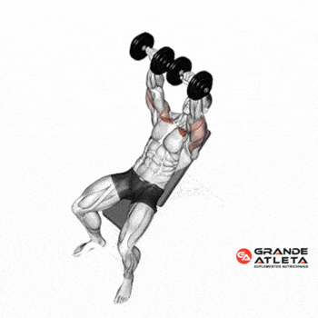
Dica: use uma inclinação confortável e controle a descida.
2. Remada baixa com triângulo
3x12 – descanso 60s
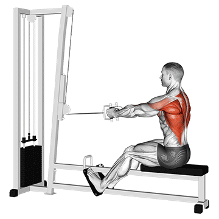
Dica: evite balançar o tronco para conseguir terminar as repetições.
3. Elevação lateral com halteres
2x15 – descanso 60s
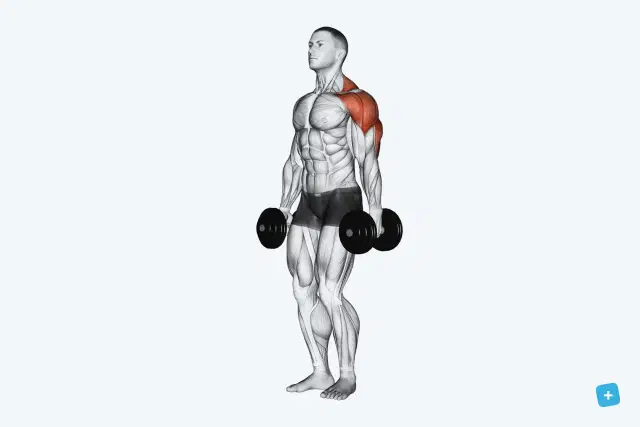
Dica: use carga que permita subir sem impulso.
4. Rosca direta (bíceps)
3x24 (12 por braço) – descanso 60s
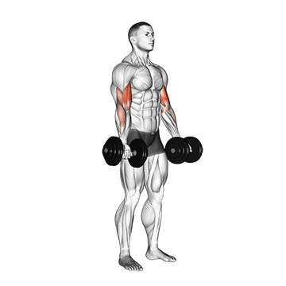
Dica: foque em manter os cotovelos fixos e a coluna neutra durante todo o movimento.
5. Tríceps pulley com corda
2x15 – descanso 60s
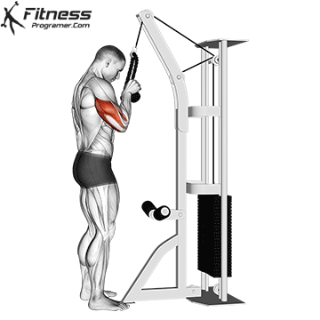
Dica: manter os cotovelos fixos ao lado do corpo e abrir a corda no final do movimento.
6. Pallof press no crossover (linha do peito)
2x10 por lado – descanso 60s
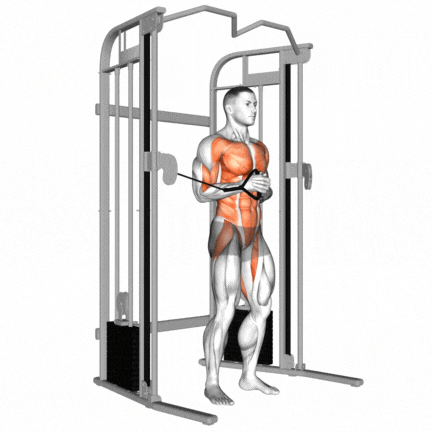
Dica: afaste-se lateralmente do aparelho até gerar tensão no cabo. O grande segredo é que é um exercício de anti-rotação: o objetivo principal do seu abdômen não é mexer o peso, mas sim resistir à força do cabo que tenta rodar o seu tronco em direção à máquina.
Alongamentos:
Peitoral – 30s cada braço
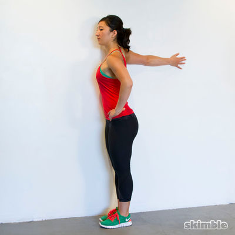
Ombro cruzado – 30s cada lado
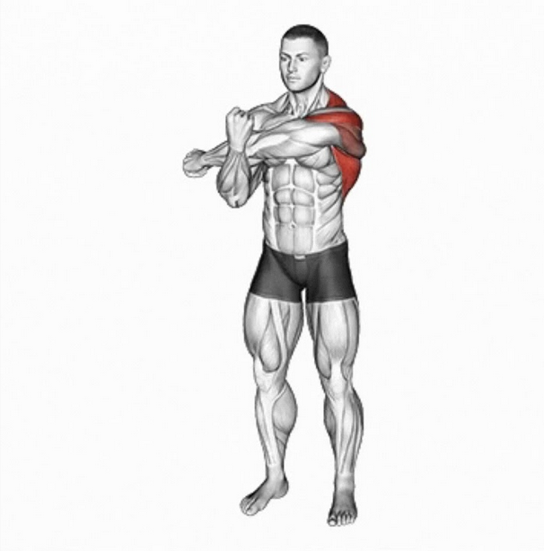
Entrelaçar nas costas – 30s cada lado
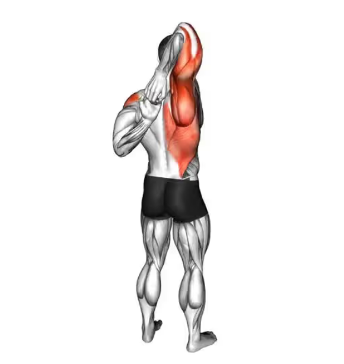
Quinta-feira
Futebol - 20h às 22h
Pré-jogo: Sachê de carboidrato 30min antes
Aquecimento / Jogo

Alongamentos pós-jogo:
Posterior de coxa – 30s por perna


Glúteo – 30s por perna


Lombar – 30s por lado

Pés na parede (elevação pernas) – 2 min

Pós-jogo: Whey protein 1 ou 2 scoops
Sexta-feira
Superior completo
Aquecimento 5 min:
3 minutos de bicicleta ergométrica ou elíptico em ritmo leve
10 rotações de ombros para a frente e 10 para trás
10 movimentos de aproximação e afastamento das escápulas, sem carga
1. Puxada frontal com triângulo
3x12 – descanso 60s
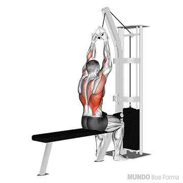
Dica: ajuste o rolo de apoio para fixar bem as coxas. Mantenha o peito estufado, a coluna com suas curvaturas naturais e incline o tronco levemente para trás (cerca de 15º).
2. Supino reto com barra
3x12 – descanso 60s
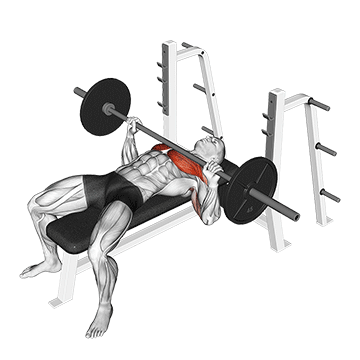
Dica: mantenha as escápulas retraídas (juntas e travadas contra o banco), os pés firmes no chão para gerar estabilidade e os cotovelos levemente fechados (em diagonal, a cerca de 45 graus do corpo).
3. Desenvolvimento com halteres (sentado)
3x12 – descanso 60s
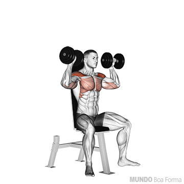
Dica: evitar os cotovelos muito abertos para o lado para proteger os ombros de lesões.
4. Remada baixa com triângulo
3x12 – descanso 60s
Dica: evite balançar o tronco para conseguir terminar as repetições.
5. Elevação lateral com halteres
2x15 – descanso 60s
Dica: use carga que permita subir sem impulso.
6. Rosca direta na polia baixa
2x15 – descanso 60s
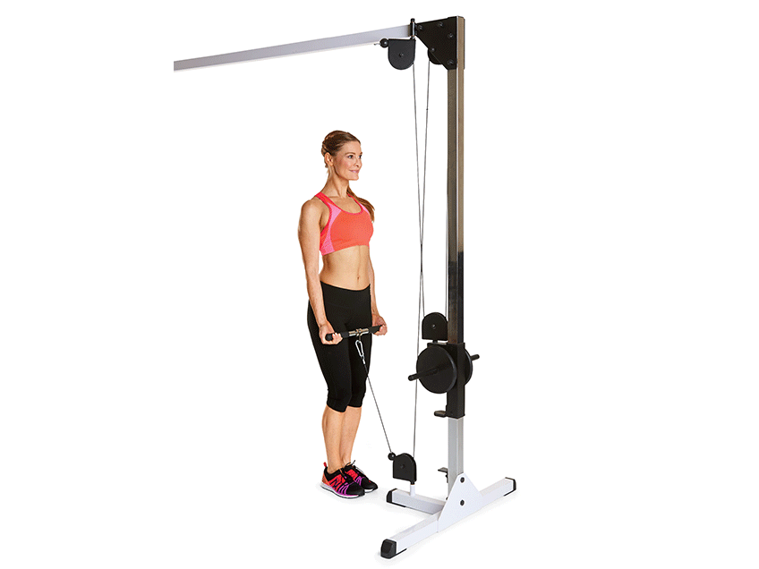
Dica: mantenha os joelhos levemente flexionados e o abdômen contraído. Movimento de subida: Puxe a barra em direção aos ombros focando exclusivamente na flexão do cotovelo. Esmague o bíceps no topo por um segundo. Movimento de descida: Desça a barra de forma lenta e controlada. Não estenda totalmente os cotovelos no final para manter o músculo sob tensão constante.
7. Tríceps pulley com corda
2x15 – descanso 60s
Dica: manter os cotovelos fixos ao lado do corpo e abrir a corda no final do movimento.
8. Pallof press no crossover (linha do peito)
2x10 por lado – descanso 60s
Dica: afaste-se lateralmente do aparelho até gerar tensão no cabo. O grande segredo é que é um exercício de anti-rotação: o objetivo principal do seu abdômen não é mexer o peso, mas sim resistir à força do cabo que tenta rodar o seu tronco em direção à máquina.
9. Dead bug
2x10 por lado – descanso 60s
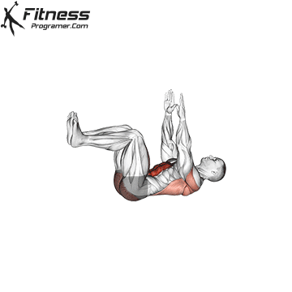
Dica: esmagar a lombar contra o chão durante todo o movimento. Não pode haver nenhum espaço entre a sua coluna e o colchonete; o abdômen deve ficar totalmente contraído (ativo) para proteger a coluna.
Alongamentos:
Peitoral – 30s cada braço
Ombro cruzado – 30s cada lado
Entrelaçar nas costas – 30s cada lado
Sábado
Pernas, glúteos e core
Aquecimento:
3 minutos de bicicleta ergométrica em ritmo leve.
10 movimentos suaves de flexão e extensão dos joelhos, sem carga.
10 elevações pélvicas sem peso, com movimento controlado.
1. Cadeira flexora
3x12 – descanso 60s
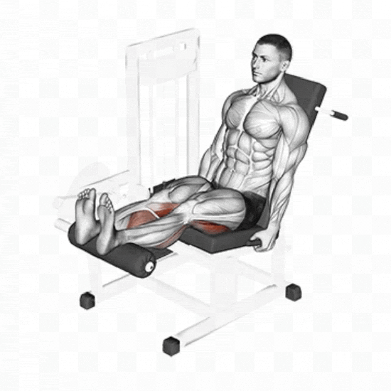
Dica: manter a lombar firmemente apoiada no encosto e o quadril travado no banco durante todo o movimento. Use as mãos para puxar os pegadores laterais para baixo com força, empurrando o seu próprio quadril contra o assento para evitar que ele suba quando você flexionar as pernas.
2. Cadeira extensora
3x12 – descanso 60s
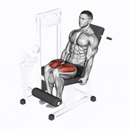
Dica: manter o quadril totalmente colado no banco do início ao fim.
3. Elevação pélvica no solo
3x12 – descanso 60s - sem ou com peso
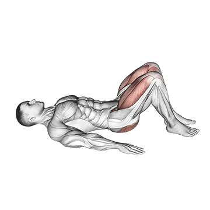
Dica: empurrar o chão usando a força dos calcanhares e não com a ponta dos pés.
4. Prancha lateral
3x30s cada lado – descanso 60s
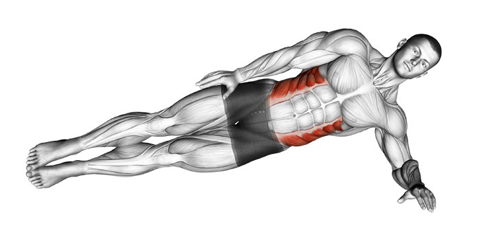
Dica: manter o cotovelo perfeitamente alinhado abaixo do ombro.
5. Dead bug
2x10 por lado – descanso 60s
Dica: esmagar a lombar contra o chão durante todo o movimento. Não pode haver nenhum espaço entre a sua coluna e o colchonete; o abdômen deve ficar totalmente contraído (ativo) para proteger a coluna.
Alongamentos:
Quadríceps – 30s cada perna
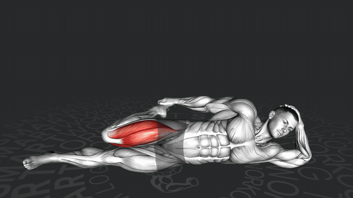
Posteriores da coxa – 30s cada perna
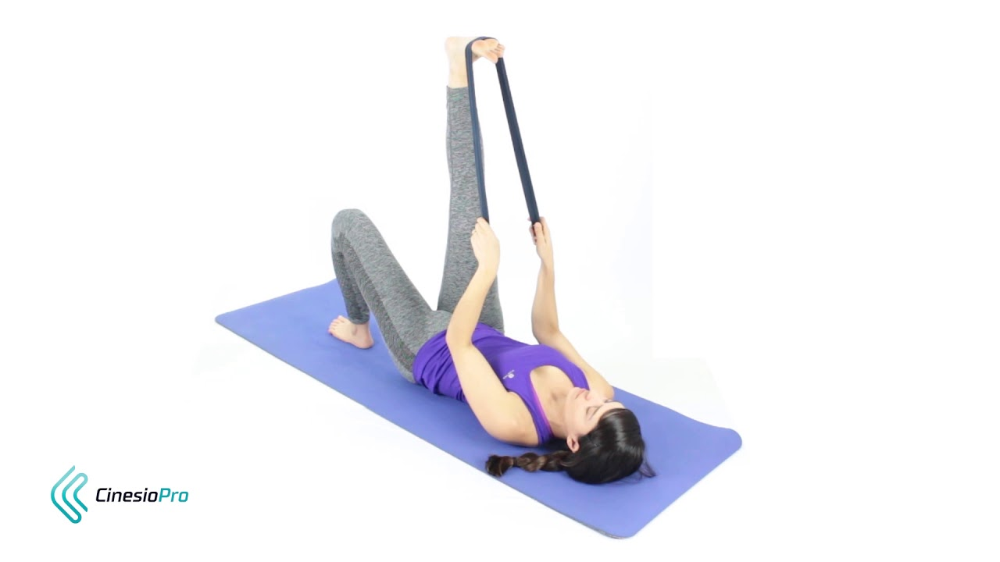
Glúteos – 30s cada perna

Flexores do quadril – 30s cada perna (sem arquear a lombar)
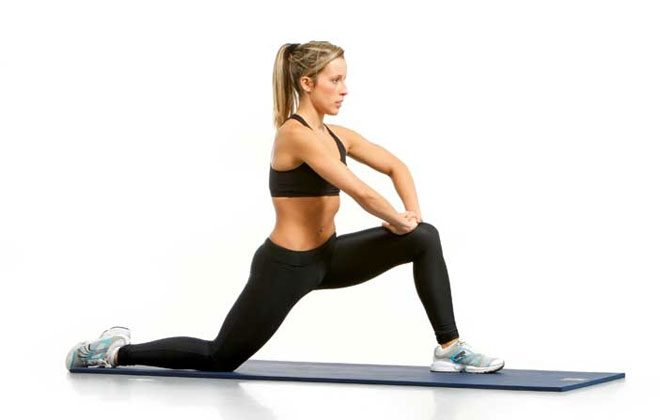
Domingo
Corrida - 5 a 10 km
Aquecimento:
- Elevação de joelhos (skiping) – 30s
- Calcanhar no glúteo – 30s
- Mobilidade de tornozelo – 30s por perna
- Agachamento – 10 repetições
- Caminhada de 5 minutos
Corrida

- Respiração sempre pelo nariz (até onde der)
- Hidratação antes e depois (300 a 500ml de água)
Alongamentos pós-corrida:
Posterior de coxa – 30s por perna
Quadríceps – 30s por perna

Glúteo – 30s por perna
Mobilidade de coluna
(joelhos em 90º, girar tronco)
30s por lado

Pés na parede (elevação pernas) – 2 min